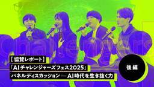

GMO Developers
https://developers.gmo.jp
「GMO Developers」は、GMOインターネットグループが開発者向けの技術情報やイベント情報をお届けするテックブログです。
フィード
総配布数1,500冊超え！ 技術書典19 出展レポート
GMO Developers
はじめに こんにちは！GMOインターネットグループ エキスパートの石丸です。 GMOインターネットグループは、11月16日に開催された「技術書典19」にゴールドスポンサーとして出展させていただきました。 技術書典は技術書 […]
5日前

【協賛レポート｜後編】「AIチャレンジャーズフェス2025」パネルディスカッション-AI時代を生き抜く力
GMO Developers
パネルディスカッション｜AI時代を生き抜く力─現場から見た働き方と学びの変化 イベント後半では、パネルディスカッション「AI時代を生き抜く力」が行われました。 生成AIの進化によって、教育、開発、事業推進の現場ではすでに […]
6日前

SECCON 14 にトップスポンサーとして協賛決定！
GMO Developers
SECCONとは SECCON（Security Contest）は、日本国内最大級のCTFであるSECCON CTF決勝と並行して行わられる来場者参加型のイベントです。SECCON14電脳会議では、SECCON Ope […]
8日前
【GMOアカデミア登壇】チームの「ありたい姿」から考える 〜中堅デザイナーが“前進と変化”を起こすために〜
GMO Developers
はじめに デザイナーとして3、4年、あるいはそれ以上のキャリアを積んでくると、ふとこんな風に感じること、ありませんか？ 「現場の業務は一通りこなせるようになった。でも、なんだか最近、成長していない気がする……」 新人の頃 […]
10日前
AI NIGHT〜現場で使われているAI事例共有〜開催決定！
GMO Developers
開催概要 イベントの目的 AI活用は、もはや一部の研究開発部門だけのものではありません。各事業・各プロダクトの現場で、具体的な成果と課題が生まれています。 本イベントでは、その“実装のリアル”にフォーカスします。 テーマ […]
11日前
【協賛レポート｜中編】日本最大級の学生向けAIキャリアフェス「AIチャレンジャーズフェス2025」
GMO Developers
企業プレゼンテーション｜GMOインターネットグループ 専務執行役員 内田朋宏 第一部の企業プレゼンテーションでは、GMOインターネットグループを代表してGMOインターネットグループ グループ専務執行役員（米国公認会計士） […]
11日前
【協賛レポート｜前編】日本最大級の学生向けAIキャリアフェス「AIチャレンジャーズフェス2025」
GMO Developers
はじめに AI人材を目指す学生向けイベント「AI チャレンジャーフェス 2025」が、2025年12月21日に渋谷のGMO Yours・フクラスで開催されました。 AI チャレンジャーズフェス 2025日時 […]
12日前
【イベントレポート・後編】GMO Developers Day 2025 -Creators Night-｜共創するデザイン組織と次世代クリエイターの可能性
GMO Developers
「Creator Synergy Project」が育むAI時代のクリエイティブ 登壇者：近藤 貞治（GMOインターネットグループ グループクリエイティブ部 部長）丸山 清人（GMOインターネット ドメイン・クラウド事業 […]
18日前
【イベントレポート・中編】GMO Developers Day 2025 -Creators Night-｜変化に挑むクリエイターのキャリアと成長
GMO Developers
現場が語る！AIとともに変わる映像制作の最前線 登壇者：清水勝太（KOEL ／ WIT COLLECTIVE ディレクター/クリエイティブコンダクター）加藤優真（GMOインターネットグループ エキスパート 映像領域） 生 […]
19日前
AI体験で地域をつなぐ──GMO hinata が挑むCSR活動最前線
GMO Developers
はじめに GMOインターネットグループでは、宮崎にもオフィスを構え、地域に根ざした企業を目指して日々さまざまな取り組みを行っています。地元の皆さまから親しみを持っていただけるよう、「GMO hinata」という愛称で活動 […]
1ヶ月前
【イベントレポート・前編】GMO Developers Day 2025 -Creators Night-｜AI時代の「クリエイティブ」を探る夜
GMO Developers
AIで変わったデザイナーの業務 —100件の検証で得られた実務の指針 登壇者：大澤健太郎（GMOメディア） 最初に登壇したのは、デザイナーとして働きながら、2025年に社内で発足した技術推進チームでAI推進の取り組みを行 […]
1ヶ月前
【イベントレポート】社内から未来を体験する-「ロボ触ろうぜ！」
GMO Developers
なぜこのイベントを開催したのか GMOインターネットグループでは、【技術を「知識」ではなく「体験」として届ける】という文化を大切にしています。「ロボ触ろうぜ！」は、その象徴的な取り組みのひとつです。実は、昨年2月にも開催 […]
1ヶ月前
属人化×ガラパゴス化からの脱却：課金基盤改善プロジェクトの舞台裏
GMO Developers
1. なにがおきていたのか（問題点） 既存の課金システムには、大きく分けて以下の課題がありました。 ● 属人化 課金ロジックや設定が特定の担当者だけに依存しており、影響調査が困難な状態でした。 ● コードのガラパゴス化 […]
1ヶ月前
ConoHa VPSで作る BungeeCord＋複数Minecraftサーバ構成入門
GMO Developers
全体構成と前提条件 想定する構成 今回作る構成は、ざっくり次のようなイメージです。・BungeeCord サーバ（入口）・グローバルIP：あり（プレイヤーが接続する IP）・プライベートIP：あり（裏側のゲームサーバに接 […]
2ヶ月前
VPS基盤におけるCPU選定の思考プロセス
GMO Developers
― 利用特性とラック電力制約から導く、環境に合わせた最適なCPU選択 VPS基盤を運用しサービスを継続していく中で、必ず訪れるのが「サーバー増設」のタイミングです。 この際、単に「前回と同じものを買う」のではなく、その時 […]
2ヶ月前
「インハウス動画サミット2026」開催決定！
GMO Developers
イベント概要 昨今、インハウスでの動画制作が目まぐるしく増加しています。動画内製化は単なる「コスト削減の手段」から「企業成長の中核」へと進化しています。 インハウス動画サミット2026は、動画内製化に取り組む企業担当者が […]
2ヶ月前
「エンジニアの成長がストップする理由とその対策」
GMO Developers
前提 本記事では、以下の2点を前提としています。 次の質問に両方とも「Yes」と答えられるなら問題ありません。 いずれかが「No」であれば、社内外問わず、信頼できる人生の先輩に相談してみることをおすすめします。 「一人前 […]
2ヶ月前
フィジカルAI × ロボティクスの百家争鳴 – CES 2026現地報告レポート
GMO Developers
はじめに：CES 2026で感じた潮流 今回のCESで特に強く印象に残ったのは、「フィジカルAI（Physical AI）とロボティクスの接続が、一気に“実装フェーズ”へ進みつつある」という点でした。会場を歩いて感じた全 […]
2ヶ月前
[協賛レポート] CODE BLUE 2025
GMO Developers
イベント概要 日時：2025年11月18日（火）、19日（水）会場：ベルサール高田馬場参加費用：有料（参加チケット詳細はEventoryにて）開催形式：対面形式主催：CODE BLUE実行委員会公式HP：https:// […]
2ヶ月前
アプリ開発の上流工程で「試せるところは全部AI」に振り切ってみた話
GMO Developers
背景 社内の顧客管理系スタッフツールを新規開発することになりました。スケジュールが厳しめだったこともあり、上流工程に割ける時間が限られている状況でした。「じゃあAIで上流を効率化しよう」と腹をくくり、試行錯誤しながらプロ […]
2ヶ月前
Kubernetes Operator 開発完全ガイド：client-go から Operator SDK (Kubebuilder) までKubernetes Operator ハンズオン
GMO Developers
1. Why Kubernetes & why k8s Operator 1.1 なぜ Kubernetes なのか？ 現代のアプリケーション開発において、コンテナ技術（Dockerなど）は「どこでも同じように動 […]
2ヶ月前
【開催レポート・後編】第5回 京大ミートアップ｜フィジカルAI最前線
GMO Developers
Session3 『強化学習の限界を探る E2E 自動運転開発』 妹尾 卓磨 氏Turing株式会社 スタッフリサーチャー SONY時代：ゲームの中に“最強レーサーAI”を生み出す 妹尾氏がまず向き合ったのは、ソニーのレ […]
2ヶ月前
CES 2026参加レポート：事前調査編
GMO Developers
はじめに 「2026年はヒューマノイド元年だ」——弊社 熊谷代表の言葉にもあるように、世界ではフィジカルAI／ヒューマノイドロボットの開発競争が加速しています（参考：日経ビジネスの記事）。その動向を最速で体感できるイベン […]
2ヶ月前
【開催レポート・前編】第5回 京大ミートアップ｜フィジカルAI最前線
GMO Developers
イベント概要 第5回 京大ミートアップ supported by GMOフィジカルAI最前線：自動運転・ヒューマノイドロボット・人とロボットの対話 日時：2025年12月12日（金）17:30～20:20場所：京都大学 […]
2ヶ月前
Claude と考え、Devinで創る ー AI分業開発やってみた
GMO Developers
記事の対象者 本記事は、PHPやLaravelフレームワークに少し知識がある方であれば理解できる内容となっております。また、過去にプログラミングを行っていただけれども、最近あまり触れていないなどの方も今後のコーディング手 […]
2ヶ月前
前略、母さん、PQC移行が心配です
GMO Developers
はじめに こんにちは！GMOグローバルサインの漆嶌(うるしま)です。 近年、量子コンピューターという爆発的な計算力を持つコンピューターが開発されており、計算に時間がかかることで守られたてきたこれまでの暗号が解読されてしま […]
2ヶ月前
【協賛レポート】サイバーセキュリティの国際会議「INCYBER Forum Japan 」
GMO Developers
真剣さと熱気に包まれた会場 午前10時からスタートしたINCYBER FORUM JAPAN 2025。この日は2つの演壇ブースで合計24講演が行われ、全席が埋まった講演では「立ち見」が出ることもありました。それでも講演 […]
2ヶ月前
暗号の2030年問題に向けた現在地 — TLSにおけるPQC対応の今
GMO Developers
はじめに はじめまして、GMOコネクト株式会社で執行役員CTOをしている菅野 哲（かんの さとる）です。 菅野は、学生の頃から暗号技術に関する研究を行い、暗号技術を軸とした情報セキュリティに関するシステム開発やIETF等 […]
2ヶ月前
AIロボットハッカソンに参加し、優勝までできた話
GMO Developers
🚀 ハッカソン概要 AMD Open Robotics Hackathon 本ハッカソンは、AMD主催（Hugging Faceも共催）した AIロボット（特にVision-Language-Actionモデル）に特化し […]
2ヶ月前
Google Workspace カードが店頭販売の棚に並ぶ！~リリースを支えるSagaパターンの分散トレーシングとコンテキスト管理~
GMO Developers
はじめに こんにちは！GMOペパボ株式会社所属の横山です。社内ではあだ名で呼び合う文化があり、はるおつと呼ばれています。普段はロリポップ・ムームードメイン事業部にてムームードメインの開発を主に行なっています。 今回のアド […]
2ヶ月前
GMOインターネット・サマーインターン2025開催レポート[後編]
GMO Developers
セキュリティコース セキュリティコースでは、「インシデントハンドリング」と「アイデアソン」の2つのコンテンツを実施しました。今回のインターンのテーマは「答えのない課題に対してチームで挑む」です。セキュリティの業務は、単独 […]
2ヶ月前
配信コメントのストリーミング処理における、WebSocketとSSEの両立と設計について
GMO Developers
こんにちは！ GMOペパボ株式会社 事業開発部 Alive Projectチームでエンジニアをしているてつをです。 Alive Projectとは「配信者のアウトプットを支援する」をミッションに昨年10月にローンチした新 […]
2ヶ月前
ブログを育てる。リニューアルと地道な改善で PV2倍を実現した話
GMO Developers
ブログリニューアルの背景 宮崎オフィスのクリエイティブチームでは、異業種から職業訓練校などを経てクリエイターに転職した方が過半数を占めます。（かくいう私もその1人！） そのため、ブログや勉強会を通じて自学自習やアウトプッ […]
2ヶ月前
GMOインターネット・サマーインターン2025開催レポート[前編]
GMO Developers
GMOインターネット・サマーインターン2025 開催概要（全コース共通） インフラコース ねらい（ゴール） インフラエンジニアの業務内容への理解を深め、自身の適性領域（設計・構築・運用など）を見極める。 概要 5日間の進 […]
2ヶ月前
Claude Codeで「寝ながら開発」するためにやった工夫
GMO Developers
やりたいこと ① AppleScriptで「Enter（Yes）」を定期的に押す Claude Code を使っていると、以下のような場面で処理が止まることがあります。 そこで、AppleScript で定期的に Ent […]
3ヶ月前
ペアリング曲線標準化が再始動 – Ethereumも採用するBLS12-381の行方
GMO Developers
はじめに ペアリング（pairing）は、BLS署名や属性ベース暗号（ABE）、IDベース暗号（IBE）などの暗号方式を成立させるための基盤技術です。そして IRTF/CFRG では、これらで利用される pairing- […]
3ヶ月前
Dify × GASで実現する実用的なAIシステム – Gmail自動返信の事例 –
GMO Developers
1. はじめに みなさん、AIを使ってなにか開発をしたことはありますか？ 実は、Dify（オープンソースのLLMアプリ開発プラットフォーム）とGoogle Apps Script（GAS）を組み合わせることで、エンジニア […]
3ヶ月前
【登壇レポート】INCYBER Forum Japan｜AIとサイバーセキュリティの融合で築く、安心・安全な未来社会
GMO Developers
「サイバー安全保障×AIの未来論 – マルチドメイン戦におけるサイバーとAIの役割」 「サイバー安全保障×AIの未来論 – マルチドメイン戦におけるサイバーとAIの役割」と銘打たれた講演では、GM […]
3ヶ月前
生成AIに関するブログを今年12件書いた話
GMO Developers
はじめに さて、昨年に引き続き今年もAdvent Calendarを担当させて頂きます。今年も日夜、生成AI技術の進展を追い続け、理解を深めるためのインプット・アウトプットを繰り返していると、いつの間にやら以下のような1 […]
3ヶ月前
コーディングAIエージェントの定量評価ってどうするの？
GMO Developers
本ブログの概要 こんにちは！GMOペパボのどすこいです！EC事業部でカラーミーショップというプロダクトの開発をしています！去年に引き続きGMOインターネットグループ Advent CalendarにAIの話を持ってきまし […]
3ヶ月前
Mac Studio M3 Ultra（96GBメモリ）でローカルLLMを動かす
GMO Developers
ローカルLLMとは ローカルLLMは、ChatGPT などのクラウド型のLLMサービスとは異なり、手元の端末などのローカル環境で動作する LLM（大規模言語モデル）です。 ローカルLLMは以下のような特徴があります。 ロ […]
3ヶ月前
フィジカルAIを実践！ヒューマノイドロボットG1がBling-Bang-Bang-Bornを踊った ー2025国際ロボット展（iREX2025）のダンスの裏話ー
GMO Developers
この記事は GMOインターネットグループ Advent Calendar 2025 15日目の記事です。2025国際ロボット展（iREX 2025）のGMOブースで披露したヒューマノイドロボット「Unitree G1」のダンスについて、強化学習やシミュレータを用いた学習方法、実機G1への展開までをエンジニアが解説します。
3ヶ月前
††ダークローンチ†† で安全にリリースする、ECサイトのレンダリングシステム
GMO Developers
はじめに こんにちは。GMOペパボ株式会社 EC事業部でエンジニアをしている大浦です。社内では「ユーキャン」と呼ばれています。小学生の頃はハンドルネームに†をつけていました。 普段は、ECサイト・ネットショップをかんたん […]
3ヶ月前
Google Cloud × Snowflake × Tableau：データ活用を加速する統合分析基盤を作った話
GMO Developers
はじめに この記事では、Google Cloud + Snowflake + Tableau Cloud を組み合わせることで までを一気通貫で実行できるデータ基盤を構築した話を紹介いたします。 近年は、LLMやMCPな […]
3ヶ月前
Claude Codeを自動制御して自律開発するGoツール Sleepship
GMO Developers
はじめに 「寝る前にタスクリストを作っておけば、翌朝には実装が完了している」——そんな開発体験を実現してみませんか？ 現代の開発者が直面する課題 現代のソフトウェア開発では、AIツールの活用が当たり前になってきました。特 […]
3ヶ月前
DynamoDB設計で痛い目にあった話 – RDB脳から抜け出すための実践ガイド
GMO Developers
なぜDynamoDBを選んだのか 私たちはハンドメイドECサービス「minne byGMOペパボ」を運営しており、今回リワード広告機能を追加することになりました。ユーザーがアプリ内で広告を閲覧すると、スタンプがもらえる仕 […]
3ヶ月前
【協賛レポート・後編】Designship 2025｜“勝つデザイン”と“やさしいデザイン”──現場から見えたこれからの指針
GMO Developers
イベント概要 セッション「“勝つデザイン”と“やさしいデザイン”のあいだ」 本セッションでは、GMOグローバルサイン・ホールディングス株式会社 田伐直子が、自身のキャリアを通じて見つめ続けてきた「勝つデザイン」と「やさし […]
3ヶ月前
説明が可能なプロダクトセキュリティについての一考察
GMO Developers
この記事では、プロダクトを提供する組織が向き合うべき「セキュリティとは何か」について、“なぜやるのか”という観点をもとに、説明可能なプロダクトセキュリティのあり方について一考察を書いていきます。 また、主な想定読者は「一 […]
3ヶ月前
「ユーザー目線」を習得する！UI/UX向上業務に初めて取り組んだビギナーがニールセンの10原則を「調査・改善提案の指針」にした話
GMO Developers
1. はじめに：私たちのグループと私の立ち位置 🔰 私は「品質管理グループ」に所属しています。本グループはシステムのバグ発見だけでなく、より「使いやすい」「わかりやすい」体験をユーザーに提供するための活動をミッションとし […]
3ヶ月前
「LLMにファイルとプロンプトを投げるだけ」では失敗する。Excelデータ抽出に学ぶコンテキストエンジニアリングの勘所
GMO Developers
この記事は GMOインターネットグループ Advent Calendar 2025 8日目の記事です。GMOエンペイのR.Sと申します。直近ではLLMを使った機能開発を行っており、そこで直面した課題と […]
3ヶ月前